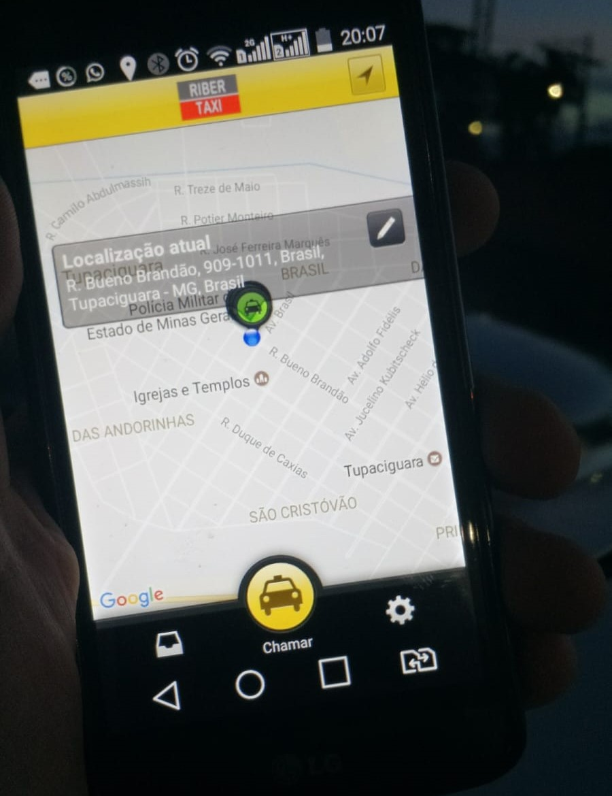

Descubra a Confiabilidade e o Conforto com a Central Riber Táxi e o Aplicativo Riber!
Desde a sua inauguração em janeiro de 2018, a Central Riber Táxi tem sido uma presença confiável e essencial na
comunidade Tupaciguarense, oferecendo serviços de transporte de primeira classe para todos os seus clientes. Com uma dedicação
inabalável à excelência no serviço e à satisfação do cliente, nos tornamos um nome de confiança quando se trata de
viagens seguras, rápidas e confortáveis.
Profissionalismo e Segurança em Primeiro Lugar
Na Central Riber Táxi, a segurança e o profissionalismo estão sempre em primeiro lugar. Nossa frota de veículos é
mantida com os mais altos padrões de qualidade, cada motorista faz inspeções regulares nos veículos para garantir que cada viagem seja uma
experiência segura e tranquila. Além disso, nossos motoristas são cuidadosamente selecionados e treinados, garantindo
que você sempre seja recebido por um profissional cortês e responsável no volante.
Disponibilidade 24 Horas por Dia, 7 Dias por Semana
Entendemos que as necessidades de transporte dos nossos clientes podem surgir a qualquer momento, dia ou noite. É por
isso que a Central Riber Táxi está sempre disponível para atendê-lo, 24 horas por dia, 7 dias por semana. Com o
aplicativo Riber, você pode solicitar uma corrida com apenas alguns toques na tela do seu smartphone, proporcionando
ainda mais conveniência e facilidade de uso.
Versatilidade e Conveniência
Nossa missão é tornar suas viagens o mais convenientes possível. Com uma variedade de opções de veículos e motoristas. Além disso, aceitamos uma variedade
de métodos de pagamento, incluindo pix, cartões de crédito e débito, para tornar o
processo de pagamento o mais fácil e conveniente possível para você.
Sua Jornada, Nossa Prioridade
Na Central Riber Táxi, sua satisfação é nossa prioridade número um. Estamos empenhados em fornecer um serviço
excepcional que exceda suas expectativas em todos os sentidos. Não importa para onde você esteja indo ou qual seja o
propósito de sua viagem, você pode confiar na Central Riber Táxi e no aplicativo Riber para levá-lo lá com segurança,
conforto e confiabilidade.
Pronto para experimentar a diferença que a Central Riber Táxi e o aplicativo Riber podem fazer em suas viagens? Não
hesite em nos ligar hoje mesmo ou baixe o aplicativo Riber na App Store ou Google Play Store para
solicitar uma corrida com facilidade e conveniência. Estamos ansiosos para servi-lo e tornar sua próxima viagem uma
experiência memorável, do início ao fim.
Central Riber Táxi - Sua jornada, nossa prioridade.

Conheça Nossa Frota Dedicada de Motoristas na Central Riber Táxi!
Na Central Riber Táxi, estamos orgulhosos de apresentar nossa equipe dedicada de motoristas, prontos para atendê-lo com
profissionalismo e cortesia em todas as suas viagens. Com uma frota de 29 motoristas altamente treinados, estamos
comprometidos em oferecer um serviço excepcional a cada cliente.
Diversidade e Inclusão: Valorizamos Cada Membro da Nossa Equipe
Nossa equipe é verdadeiramente diversificada, refletindo os valores de inclusão que defendemos. Dos nossos 29
motoristas, temos o prazer de contar com 5 mulheres que trazem uma perspectiva única e uma abordagem cuidadosa para o
volante. Estamos comprometidos em proporcionar um ambiente de trabalho igualitário e respeitoso para todos os nossos
motoristas, independentemente do gênero.
Variedade de Carros para Atender às Suas Necessidades
Com uma frota diversificada de veículos, temos a flexibilidade de atender a uma ampla gama de necessidades de
transporte. Nossos motoristas estão prontos para levá-lo onde você precisa, a qualquer hora do
dia ou da noite.
Horários Variados para Sua Conveniência
Entendemos que a vida nem sempre segue um horário padrão de 9 às 5, e é por isso que nossos motoristas estão disponíveis
em uma variedade de horários. Seja uma corrida matinal para o trabalho, uma viagem noturna de volta para casa após uma
noite fora ou um transporte para o hospital no meio da madrugada, você pode confiar na Central Riber Táxi para estar lá
quando você precisar.
Sua Segurança e Satisfação São Nossa Prioridade
Na Central Riber Táxi, sua segurança e satisfação são nossa prioridade máxima. Nossos motoristas são treinados para
priorizar a segurança em todas as viagens, garantindo que você chegue ao seu destino de forma segura e tranquila. Além
disso, estamos sempre buscando maneiras de melhorar e aprimorar nosso serviço para garantir que cada cliente tenha uma
experiência excepcional conosco.
Confie na Central Riber Táxi para Todas as Suas Necessidades de Transporte
Quando se trata de escolher um serviço de táxi confiável e profissional, não procure mais do que a Central Riber Táxi.
Com nossa equipe dedicada de 29 motoristas, incluindo 5 mulheres, uma frota diversificada de veículos e horários
flexíveis de trabalho, estamos prontos para atender a todas as suas necessidades de transporte. Ligue-nos hoje mesmo ou através do aplicativo Riber e experimente a diferença que a Central Riber Táxi pode fazer em suas viagens!

Descubra o Aplicativo Riber: Sua Solução de Transporte Simples e Confiável, Parte Integrante da Central Riber Táxi!
Apresentamos o aplicativo Riber -sua plataforma de transporte confiável, eficiente e fácil de usar, desenvolvida
especialmente para atender às suas necessidades de viagem com praticidade e conveniência. Como parte integrante da
Central Riber Táxi, o aplicativo Riber proporciona uma maneira simples e segura de se locomover pela cidade,
complementando os serviços oferecidos pela empresa de táxis.
Como Funciona
O aplicativo Riber opera com a mesma facilidade e conveniência que você já conhece de outros aplicativos de transporte.
Basta baixar o aplicativo em seu smartphone, disponível tanto na App Store quanto no Google Play Store, e em poucos
minutos você estará pronto para começar.
Solicite uma Corrida com Apenas Alguns Toques
Com o aplicativo Riber, solicitar uma corrida é tão simples quanto tocar na tela do seu celular. Basta abrir o
aplicativo, inserir seu local de partida e destino, e em segundos você receberá a confirmação da sua corrida, juntamente
com detalhes sobre o motorista e o veículo que o buscará.
Acompanhe Sua Viagem em Tempo Real
Uma vez que sua corrida esteja confirmada, você pode acompanhar o progresso do seu motorista em tempo real diretamente
pelo aplicativo. Isso significa que você sempre saberá exatamente quando seu motorista chegará e poderá planejar sua
viagem com total confiança e tranquilidade.
Segurança em Primeiro Lugar
Na Riber, sua segurança é nossa prioridade número um. Todos os motoristas cadastrados no aplicativo passam por um
rigoroso processo de seleção e verificação, garantindo que você sempre seja atendido por um profissional qualificado e
confiável.
Experimente o Aplicativo Riber Hoje Mesmo!
Pronto para experimentar a conveniência e a confiabilidade do aplicativo Riber? Baixe agora mesmo e descubra por que
tantos clientes confiam em nós para suas necessidades de transporte diárias. Não importa para onde você esteja indo ou
quando, o aplicativo Riber está sempre ao seu alcance, pronto para levá-lo lá com segurança e conforto.
Baixe Agora e Comece a Viajar com o Aplicativo Riber!
Central Riber Táxi - Seu parceiro confiável de transporte, onde quer que você vá.

Central Riber Táxi: Sempre Disponível para Atender Você!
Na Central Riber Táxi, estamos comprometidos em oferecer um serviço de transporte excepcional e conveniente para todos
os nossos clientes, a qualquer hora do dia ou da noite. Com diversas opções de contato e um horário de atendimento
flexível, estamos aqui para tornar suas viagens mais fáceis e seguras.
Opções de Contato Convenientes
Para entrar em contato conosco, você pode ligar ou enviar mensagem via WhatsApp para o número principal da central: (34)
3281-1616 ou através do número de celular: (34) 99917-1627. Estes números estão disponíveis tanto para ligações quanto para mensagens durante o horário de funcionamento da
central.
Horário de Atendimento Estendido
Nossa central funciona das 6h às 22h para atender às suas necessidades durante o dia. No entanto, entendemos que algumas
viagens podem ocorrer durante a noite. Por isso, mesmo após o horário de funcionamento, você ainda pode contar conosco.
Das 22h às 6h, basta ligar para o número principal da central, (34) 3281-1616, e sempre haverá um plantonista disponível
para atender suas chamadas e providenciar o serviço de táxi que você precisa.
Sua Comodidade é a Nossa Prioridade
Na Central Riber Táxi, sua satisfação e segurança são nossa prioridade máxima. Estamos aqui para tornar suas viagens
mais fáceis e tranquilas, fornecendo um serviço confiável e conveniente a qualquer hora do dia ou da noite. Não importa
onde você precise ir ou quando, estamos sempre prontos para ajudar.
Ligue ou Envie uma Mensagem Agora Mesmo!
Pronto para sua próxima viagem? Não hesite em nos contatar! Ligue para nossos números principais ou envie uma
mensagem pelo WhatsApp e deixe-nos cuidar de todos os detalhes para você. Estamos ansiosos para servi-lo e tornar sua
experiência de transporte a melhor possível!
Central Riber Táxi: Seu parceiro confiável de transporte, sempre ao seu lado, a qualquer hora do dia ou da noite.